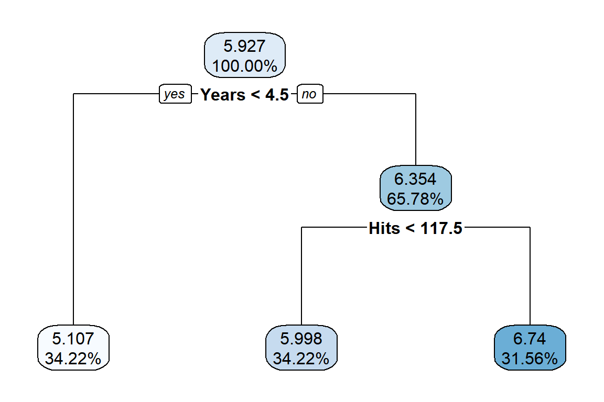
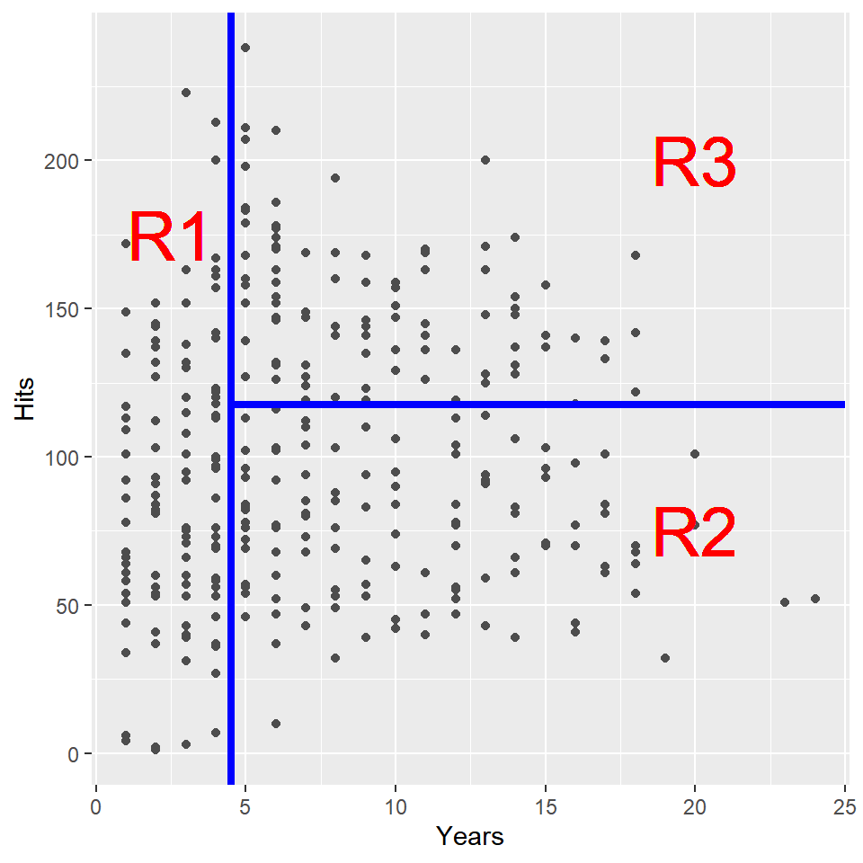
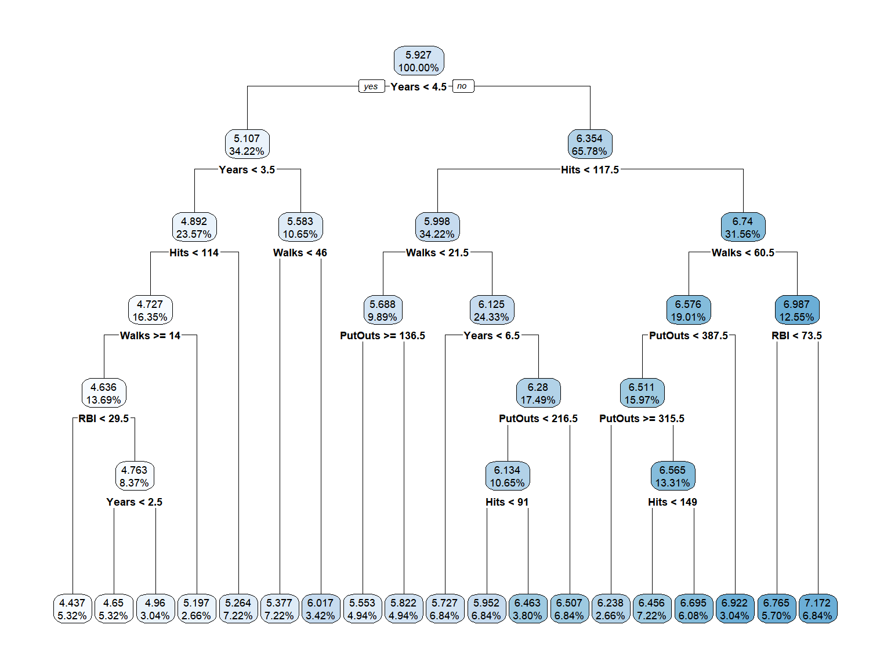
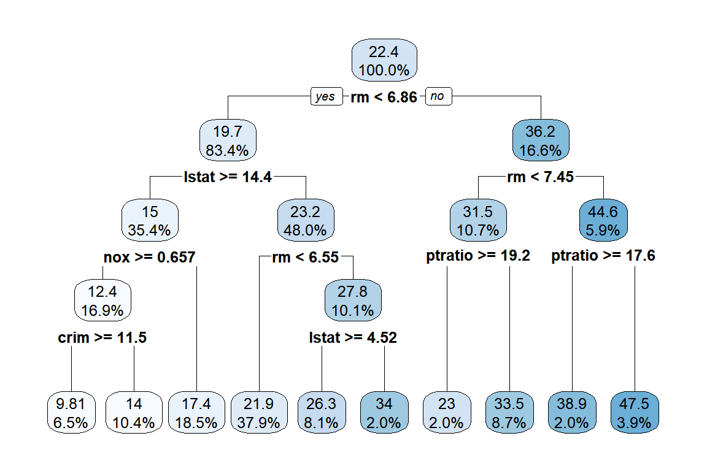
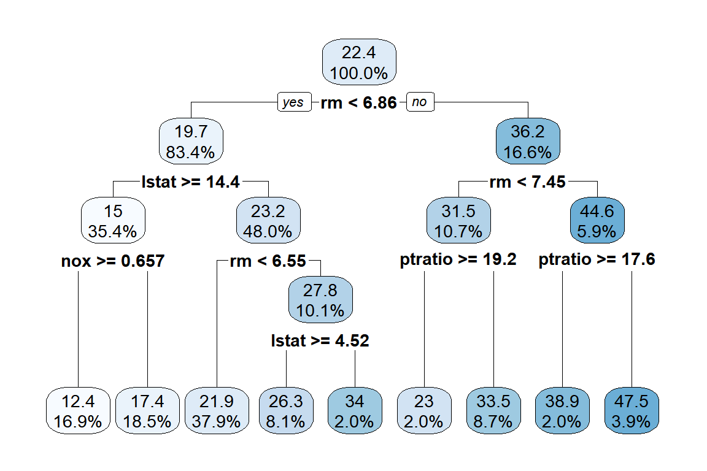
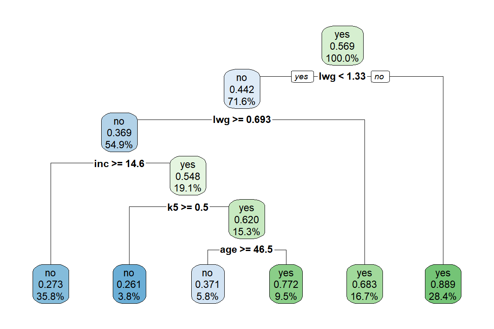

3 장 Tree-based 모형
1장에서는 반응변수가 연속형인 경우에 적용되는 회귀모형에 대해 살펴보았고, 2장에서는 반응변수가 이항변수인 경우에 적용되는 분류모형에 대해 살펴보았다. 지금부터는 연속형 반응변수에 적용되는 회귀모형과 이항반응변수에 적용되는 분류모형에 모두 적용될 수 있는 “tree-based” 모형에 대해 살펴보고자 한다.
Tree-based 모형은 기본적으로 설명변수 공간의 분할을 근거로 하고 있다. 설명변수의 공간의 분할 결과는 tree 형태로 표현되며, 모형의 예측은 동일 공간에 속한 자료의 평균값(회귀모형)이거나, 최빈값(분류모형)으로 이루어진다.
Tree-based 모형은 해석이 쉽고 편하다는 장점이 있으나, 1장이나 2장에서 살펴본 모형에 비하여 예측의 정확도나 효율성이 상당히 떨어진다는 문제가 있다. 예측의 정확도를 높이기 위해 대안으로 제시되는 tree-based 모형에는 Bagging, random forest, boosting 모형이 있다. 이 방식들의 공통점은 많은 수의 tree 모형을 적합시키고, 그 결과를 결합해서 예측하는 것이다.
3.1 Decision tree 모형
3.1.1 Regression tree 모형
연속형 반응변수에 대한 tree 모형을 regression tree 모형이라고 한다.
Regression tree 모형에 대한 예제 자료로 패키지 ISLR에 있는 데이터 프레임 Hitters를 사용해 보자.
Hitters는 MLB 1986~87 시즌 322명 선수의 연봉에 대한 자료이다.
> data(Hitters, package="ISLR")> library(tidyverse)
> Hitters %>% as_tibble() %>% print(n = 5)
# A tibble: 322 × 20
AtBat Hits HmRun Runs RBI Walks Years CAtBat CHits CHmRun CRuns CRBI
<int> <int> <int> <int> <int> <int> <int> <int> <int> <int> <int> <int>
1 293 66 1 30 29 14 1 293 66 1 30 29
2 315 81 7 24 38 39 14 3449 835 69 321 414
3 479 130 18 66 72 76 3 1624 457 63 224 266
4 496 141 20 65 78 37 11 5628 1575 225 828 838
5 321 87 10 39 42 30 2 396 101 12 48 46
# … with 317 more rows, and 8 more variables: CWalks <int>, League <fct>,
# Division <fct>, PutOuts <int>, Assists <int>, Errors <int>, Salary <dbl>,
# NewLeague <fct>
# ℹ Use `print(n = ...)` to see more rows, and `colnames()` to see all variable nameslog(Salary)를 반응변수, Years와 Hits를 설명변수로 하는 regression tree를 구성해 보자.
적합된 tree 모형은 그림 3.1에서 볼 수 있다.
적합된 tree 모형은 ‘root node’를 시작으로 Years < 4.5를 기준으로 첫 번째 분리가 이루어졌고,
Hits < 117.5를 기준으로 두 번째 분리가 이루어진 것을 알 수 있다.
두 번의 분리로 새 개의 ’terminal node’ 혹은 ’leaves’가 생성되었다.

그림 3.1: Hitters 자료에 대한 regression tree 모형 적합 결과
Tree 모형의 적합 과정은 설명변수의 공간을 분할하여, 동일 공간에 속한 반응변수 자료의 동질성을 최대화하는 것이다.
그림 3.1에 표현된 tree 모형은 설명변수 Years와 Hits로 구성된 2차원 공간을 log(Salary)가 동일 공간에서는 최대한 유사한 값을 갖도록 세 개 공간으로 분할한 것이다.
분할된 공간 R1, R2, R3를 표현한 그래프는 그림 3.2에서 볼 수 있다.

그림 3.2: Hitters 자료에 대한 regression tree 모형의 설명변수 공간 분할
\(\bullet\) Tree 모형 적합: 설명변수 공간의 분할
Tree 모형 적합을 위한 설명변수의 공간 분할 방법에 대해 살펴보자. 공간 분할의 기본적인 목표는 동일 공간에 속한 자료들의 동질성을 최대화하는 것이며, 연속형 자료의 동질성은 분산의 개념을 이용해서 측정할 수 있다. 즉, 설명변수 \(X_{1}, X_{2}, \ldots, X_{k}\) 로 구성되는 전체 공간을 서로 겹치지 않는 \(J\) 개의 공간으로 분리하고자 한다면, 예측오차의 평가측도인 식 (3.1)의 RSS가 최소가 되도록 \(R_{1}, R_{2}, \ldots, R_{J}\) 를 구성하는 것이다.
\[\begin{equation} RSS = \sum_{j=1}^{J} \sum_{i \in R_{j}} \left(y_{i}-\overline{y}_{R_{j}} \right)^{2} \tag{3.1} \end{equation}\]
그러나 공간 분할에 대한 구체적인 제약 조건이 없는 상태에서 식 (3.1)을 최소화시키는 최적 분할을 찾는 것은 불가능한 문제이다. 우리가 적용하려는 방식은 이른바 “top-down” 방식 혹은 “recursive binary splitting”이라고 하는 방식이다. 단계적으로 RSS를 가장 크게 감소시킬 수 있는 분할을 실시하되, 이전 단계의 분할로 구성된 영역 중 하나를 선택해서 두 개의 영역으로 분리하는 것인데, 이러한 분할은 설명변수 \(X_{1}, X_{2}, \ldots, X_{k}\) 중 한 변수를 선택하고, 이어서 해당 변수의 분할 기준점을 찾는 작업으로 이루어진다.
분할 전 RSS는 전체 자료가 대상이므로 \(RSS = \sum \left(y_{i}-\overline{y}\right)^{2}\) 가 된다. 첫 번째 분할은 식 (3.2)의 RSS를 최소화시키는 분할 \(R_{1}\) 과 \(R_{2}\) 를 구성하는 것이다. 단, \(R_{1}\)은 \(X_{j}<s\) 를 만족시키는 공간이고, \(R_{2}\)는 \(X_{j} \geq s\) 를 만족시키는 공간이다.
\[\begin{equation} RSS = \sum_{i \in R_{1}} \left(y_{i}-\overline{y}_{R_{1}}\right)^{2} + \sum_{i \in R_{2}} \left(y_{i}-\overline{y}_{R_{2}}\right)^{2} \tag{3.2} \end{equation}\]
두 번째 분할은 첫 번째 분할로 구성된 2개의 영역 중에서 RSS를 가장 크게 감소시킬 수 있도록 한 영역을 선택하고 분할 기준점을 찾아 두 영역으로 분리하는 것이다. 두 번째 분할이 이루어지면 총 3개의 영역이 구성된다. 이후의 분할 과정도 동일한 방식으로 진행되며, 미리 설정된 stopping rule이 만족될 때까지 반복된다.
\(\bullet\) Tree pruning
예제로 ISLR::Hitters에서 log(Salary)를 반응변수로, Years, Hits, RBI, Walks, PutOuts를 설명변수로 하는 tree 모형의 적합결과를 그래프로 나태내 보자.

그림 3.3: Hitters 자료에 대한 regression tree 모형 적합 결과
적합된 tree 모형은 19개의 terminal nodes가 있는 비교적 복잡한 형태의 모형이다. 지나치게 많은 분할이 이루어진 tree 모형은 training data의 세밀한 특징을 잘 나타낼 수 있겠지만, test data와 같은 새로운 자료에 대해서는 매우 부정확한 예측을 하게 되는 이른바 overfitting의 문제가 있을 수 있다. 반면에 작은 횟수의 분할로 적합된 작은 크기의 tree 모형은 training data에 대한 설명력이 조금은 떨어져서 bias가 커지는 문제가 있겠지만, 예측 결과의 변동성은 낮아지는, 즉 variance가 작아지는 효과를 볼 수 있다. 따라서 가장 적절한 크기의 tree 모형을 선택할 수 있는 방법이 필요하며, 이것은 tree pruning이라고 한다.
우리가 적용할 방법은 모형의 복잡성, 즉 tree 모형의 크기가 미치는 영향력을 조절하는 tuning parameter를 사용하는 방법이다. 식 (3.1)에 정의된 RSS는 분할이 진행되어 모형의 복잡성이 높아질수록 감소하는 특징을 갖고 있는데, 여기에 모형의 복잡성을 penalty로 추가함으로써, 모형의 크기를 고려한 예측오차를 정의할 수 있다.
\[\begin{equation} RSS_{c_{p}} = RSS + c_{p} \cdot |T| \tag{3.3} \end{equation}\]
단, \(|T|\) 는 tree 모형의 terminal nodes의 개수이고, \(c_{p}\) 는 0 또는 양수를 값으로 갖는 tuning parameter이다. \(c_{p}\) 의 역할은 모형의 복잡성, 즉 tree 모형 크기의 영향력을 조절하는 것으로써, 만일 \(c_{p}=0\) 이면 \(RSS_{c_{p}}\) 는 식 (3.1)에 정의된 RSS와 동일한 것이 되며, \(c_{p}\) 의 값이 증가함에 따라 tree 모형의 크기는 감소하게 된다. 최적 \(c_{p}\) 값은 cross-validataion에 의한 예측오차 계산으로 선택할 수 있다.
\(\bullet\) Cross-validation
Test error는 통계모형의 적합에 사용되지 않은 새로운 자료에 대한 예측 오차를 의미하며,
특정 통계모형에 의한 예측의 정당성을 확보하기 위해서는 test error가 낮다는 것을 확인할 수 있어야 한다.
그렇다면 Test error를 효과적으로 추정할 수 있는 방법이 무엇인지 살펴보자.
전체 data를 training data와 test data로 분리해서 test data set을 확보할 수 있지만,
충분한 양을 확보하기에는 현실적인 어려움이 있을 수 있다.
Cross-validation은 training data를 이용한 test error의 추정방법이다. Training data 중 일부분을 모형적합 과정에서 제외해서 test 목적으로 사용하는 것인데, 자료의 제외 방식 등에 따라서 몇 가지 방법으로 구분된다. 그 중에서 “leave-one-out cross-validation”과 “k-fold cross-validation”에 대해 살펴보자.
- Leave-one-out cross-validation (LOOCV)
전체 \(n\) 개의 자료 중 한 개의 자료를 모형 적합에서 차례로 제외하고 test 목적으로 사용하는 방식이다. 즉, 자료 \((\mathbf{x}_{1}, y_{1}), \ldots, (\mathbf{x}_{n}, y_{n})\) 중 \((\mathbf{x}_{i}, y_{i})\), \(i=1, 2, \ldots, n\) 을 제외하고 적합한 모형으로 \(y_{i}\) 를 예측하는 과정을 \(n\) 번 반복하며, 그 과정에서 발생한 오차를 근거로 test error를 다음과 같이 추정하는 방식이다.
\[\begin{equation} \frac{1}{n} \sum_{i=1}^{n} \left(y_{i}-\hat{y}_{i}\right)^{2} \tag{3.4} \end{equation}\]
전체 자료 중 한 개의 자료만 제외되므로 자료의 크기가 큰 대규모의 자료인 경우에는 많은 계산 과정이 필요한 방식이다. 대부분의 자료가 사용되기 때문에 예측 bias는 작겠지만, \(n\) 번의 적합 과정에서 사용된 자료가 거의 비슷하기 떄문에, 각 모형의 예측 결과 사이에는 높은 상관관계가 존재하게 되고, 따라서 예측 결과의 분산이 커지는 문제가 있다.
- k-fold cross-validation
먼저 training data를 비슷한 크기의 \(k\) 개의 그룹(fold)으로 구분한다. 이어서 그 중 한 그룹의 자료를 제외하고 나머지 자료만으로 모형을 적합한 후에 제외된 한 그룹 자료의 반응변수를 예측하고 예측 오차를 계산한다. 이 과정을 \(k\) 번 차례로 반복하면 \(k\) 개의 예측 오차를 얻게 되는데, 그 오차의 평균으로 test error를 추정하는 방식이다.
LOOCV에 비해 계산 과정이 단순한 방식인데, 모형적합 과정에 사용된 자료의 개수가 LOOCV 보다 작기 때문에 bias는 더 클 수 있다. 그러나 한 그룹의 자료가 차례로 제외된 상태에서 \(k\) 번의 모형 적합이 이루어지기 때문에, 각 모형 적합에 사용된 자료 중 겹치는 자료의 비율은 더 낮아지게 되고, 따라서 예측 결과 사이의 상관관계가 더 낮게 형성될 수 있어서, 예측의 분산을 낮출 수 있는 효과가 있다.
\(k\) 값을 조정하면 bias와 variance 사이의 trade-off가 가능한데, 일반적으로 사용되는 것은 \(k=5\) 또는 \(k=10\) 이다.
\(\bullet\) 예제: MASS::Boston
Boston은 보스톤 지역의 주택 가격에 대한 자료이다.
> data(Boston, package = "MASS")
> str(Boston)
'data.frame': 506 obs. of 14 variables:
$ crim : num 0.00632 0.02731 0.02729 0.03237 0.06905 ...
$ zn : num 18 0 0 0 0 0 12.5 12.5 12.5 12.5 ...
$ indus : num 2.31 7.07 7.07 2.18 2.18 2.18 7.87 7.87 7.87 7.87 ...
$ chas : int 0 0 0 0 0 0 0 0 0 0 ...
$ nox : num 0.538 0.469 0.469 0.458 0.458 0.458 0.524 0.524 0.524 0.524 ...
$ rm : num 6.58 6.42 7.18 7 7.15 ...
$ age : num 65.2 78.9 61.1 45.8 54.2 58.7 66.6 96.1 100 85.9 ...
$ dis : num 4.09 4.97 4.97 6.06 6.06 ...
$ rad : int 1 2 2 3 3 3 5 5 5 5 ...
$ tax : num 296 242 242 222 222 222 311 311 311 311 ...
$ ptratio: num 15.3 17.8 17.8 18.7 18.7 18.7 15.2 15.2 15.2 15.2 ...
$ black : num 397 397 393 395 397 ...
$ lstat : num 4.98 9.14 4.03 2.94 5.33 ...
$ medv : num 24 21.6 34.7 33.4 36.2 28.7 22.9 27.1 16.5 18.9 ...변수 medv를 반응변수로 하는 tree 모형을 적합해 보자.
자료탐색 과정은 생략하고 tree 모형적합 절차만을 살펴보도록 하자.
분석의 첫 번째 단계는 전체 자료를 training data와 test data로 분리하는 것이다.
> library(caret)
> library(tidyverse)> set.seed(123)
> train.id <- createDataPartition(Boston$medv, p = 0.7, list = FALSE)
> train_B <- Boston %>% slice(train.id)
> test_B <- Boston %>% slice(-train.id)Tree 모형의 적합은 패키지 caret의 함수 train()으로 진행할 것이다.
패키지 caret은 Machine learning에 최적화된 패키지로써 분석에 필수적인 기능을 모두 포함하고 있으며,
다양한 modelling 기법을 표준화된 방식으로 사용할 수 있다.
함수 train()은 ML 모형의 적합을 위해 사용되는 함수인데, 239 종류의 ML 모형 적합이 가능하다.
작동 방식은 각 ML 모형의 적합을 위한 패키지에서 필요한 함수를 불러와 적용시키는 것인데,
표준화된 방식을 사용하기 때문에 사용자가 편하게 사용할 수 있다.
모형 선택은 method에 각 ML 모형의 키워드를 지정하면 된다.
Tree 모형의 경우에는 method = 'rpart'를 입력하면 되며, 필요한 패키지인 rpart는 설치되어야 한다.
또한 각 ML 모형마다 필요한 tuning parameter를 TuneLength 또는 TuneGrid를 통해서 지정할 수 있다.
함수 train()을 사용해서 tree 모형을 적합해 보자.
모형 적합은 식 (3.3)에 정의된 방식을 사용하되, 10-fold CV으로 tuning parameter \(c_{p}\) 의 최적 값을 찾아보자.
> set.seed(1)
> m1 <- train(medv ~ ., data = train_B,
+ method = "rpart", tuneLength = 10,
+ trControl = trainControl(method = 'cv', number = 10))함수 train()에서 모형 설정은 함수 lm()과 동일하게 R formula 방식을 사용할 수 있으며,
반응변수가 연속형이면 regression tree 모형이 적합된다.
요소 method에 "rpart"를 지정하면, 예측 오차가 최소인 tree 모형을 적합한다.
요소 tuneLength에는 최적 tuning parameter 값을 찾기 위한 grid의 길이를 지정할 수 있다.
요소 trControl은 모형의 적합 및 평가 방식 등을 설정하는 기능을 갖고 있는데,
함수 trainControl()을 사용해서 지정하게 된다.
함수 trainControl()의 요소 method에는 적용되는 CV 방식을 정할 수 있는데, method = 'cv', number = 10은 10-fold CV를 의미한다.
적합된 결과를 살펴보자.
> m1
CART
356 samples
13 predictor
No pre-processing
Resampling: Cross-Validated (10 fold)
Summary of sample sizes: 320, 320, 320, 321, 321, 320, ...
Resampling results across tuning parameters:
cp RMSE Rsquared MAE
0.007670005 4.357423 0.7517554 3.106724
0.008610415 4.397989 0.7485334 3.119257
0.011358068 4.557210 0.7303147 3.248633
0.011952330 4.559965 0.7298686 3.259467
0.021800452 4.646888 0.7229350 3.341879
0.027794282 4.731511 0.7157403 3.421950
0.034497434 4.879750 0.6953376 3.505237
0.080160736 5.497892 0.6318944 3.903550
0.165305341 6.862030 0.4455311 4.986384
0.462979695 8.276882 0.2938345 6.124176
RMSE was used to select the optimal model using the smallest value.
The final value used for the model was cp = 0.007670005.10-fold CV로 계산된 예측 오차의 RMSE를 근거로 최적 모형이 선택되었다.
다른 측도인 Rsquared 또는 MAE를 근거로 모형을 선택하기 위해서는 요소 metric에 해당 문자를 지정해야 한다.
> set.seed(1)
> train(medv ~ ., data = train_B,
+ method = "rpart", tuneLength = 10,
+ trControl = trainControl(method = 'cv', number = 10),
+ metric = "Rsquared")
CART
356 samples
13 predictor
No pre-processing
Resampling: Cross-Validated (10 fold)
Summary of sample sizes: 320, 320, 320, 321, 321, 320, ...
Resampling results across tuning parameters:
cp RMSE Rsquared MAE
0.007670005 4.357423 0.7517554 3.106724
0.008610415 4.397989 0.7485334 3.119257
0.011358068 4.557210 0.7303147 3.248633
0.011952330 4.559965 0.7298686 3.259467
0.021800452 4.646888 0.7229350 3.341879
0.027794282 4.731511 0.7157403 3.421950
0.034497434 4.879750 0.6953376 3.505237
0.080160736 5.497892 0.6318944 3.903550
0.165305341 6.862030 0.4455311 4.986384
0.462979695 8.276882 0.2938345 6.124176
Rsquared was used to select the optimal model using the largest value.
The final value used for the model was cp = 0.007670005.적합된 tree 모형을 그래프로 표현해 보자.
패키지 rpart.plot의 함수 rpart.plot()을 사용하면 된다.
> library(rpart.plot)
> rpart.plot(m1$finalModel, roundint=FALSE, digits = 3)
그림 3.4: Boston 자료의 tree 모형 적합 결과
함수 rpart.plot()의 요소 roundint는 분리 기준 숫자를 정수로 반올림해서 표시할 것인지를 정하는 것이고, digits는 유효숫자를 지정하는 것이다.
그림 3.4의 각 node에 숫자가 표시되어 있는데,
첫 번째 숫자는 각 node에 속한 자료의 변수 medv의 평균값이고,
두 번째 숫자는 각 node에 속한 자료의 비율이다.
최적 tree 모형을 선택하는 기준으로 ’최소예측오차’가 많이 사용되고 있는데,
’one-standard-error(1SE) rule’을 사용하는 것도 괜찮은 대안이 될 수 있다.
1SE rule은 (최소 예측 오차 + 1SE) 범위에 포함되는 tree 모형 중 크기가 가장 작은 모형을 최적 모형으로 선택하는 방법이다.
함수 train()에서는 method = "rpart1SE"를 지정하면 된다.
이 경우에는 적용되는 tuning parameter가 없기 때문에 tuneLength는 필요 없다.
> set.seed(1)
> m2 <- train(medv ~ ., data = train_B,
+ method = "rpart1SE",
+ trControl = trainControl(method = 'cv', number = 10))적합 결과를 그래프로 확인해 보자.
> rpart.plot(m2$finalModel, roundint=FALSE, digits = 3)
그림 3.5: Boston 자료의 1SE rule에 의한 tree 모형 적합 결과
그림 3.4에 표현된 최소 RMSE 모형보다 node의 개수가 하나 작은 것을 알 수 있다.
이제 적합된 두 tree 모형을 이용하여 test data에 대한 예측 실시해 보자.
예측은 함수 predict()로 할 수 있다.
> pred_1 <- predict(m1, newdata = test_B)
> pred_2 <- predict(m2, newdata = test_B)예측 오차의 확인은 caret의 함수 defaultSummary()로 할 수 있다.
Test data의 반응변수와 예측 결과를 각각 obs와 pred라는 이름의 열로 구성한 데이터 프레임을 만들어서 입력하면 된다.
> defaultSummary(data.frame(pred = pred_1, obs = test_B$medv))
RMSE Rsquared MAE
5.4362182 0.6820792 3.2849165
> defaultSummary(data.frame(pred = pred_2, obs = test_B$medv))
RMSE Rsquared MAE
5.5684877 0.6671744 3.4993889 3.1.2 Classification tree 모형
Classification tree 모형은 반응변수가 범주형 변수인 경우에 적용되는 tree 모형으로써, 로지스틱 회귀모형처럼 분류가 주된 목적으로 사용되는 모형이다. 모형 설정 방법은 3.1.1절에서 살펴본 regression tree 모형의 경우와 동일하게 설명변수 공간에 대한 recursive binary splitting으로 같은 공간에 속한 자료의 동질성을 더 높이도록 분할이 이루어진다.
자료의 동질성 측도로 regression tree에서는 RSS를 사용했는데, 분류 목적에는 적합하지 않은 측도가 된다. 분류가 목적인 모형에서는 동일 범주에 속한 자료의 비율이 중요한 동질성 측도가 되는데, classification tree에서는 Gini index와 entropy로 동질성을 측정한다.
두 개의 범주로 이루어진 이항 반응변수에 대한 Gini index와 entropy의 정의를 살펴보자. \(p_{1}\) 과 \(p_{2}\) 를 각각 첫 번째 범주와 두 번째 범주에 속할 확률이라고 하면, Gini index는 다음과 같다.
\[\begin{equation} p_{1}(1-p_{1}) + p_{2}(1-p_{2}) = 2p_{1}p_{2} \tag{3.5} \end{equation}\]
Entropy는 다음과 같다.
\[\begin{equation} -(p_{1} \log p_{1} + p_{2} \log p_{2}) \tag{3.6} \end{equation}\]
Gini index와 entropy는 모두 \(p_{i}\) 가 0 또는 1에 가까운 값을 가질수록 작은 값을 갖게 되는 측도인데,
\(p_{i}\) 가 0 또는 1에 가까운 값을 갖는다는 것은 곧 자료의 동질성이 높다는 것을 의미한다.
따라서 자료의 동질성이 높아질수록 작은 값을 갖게 되는 측도이다.
\(\bullet\) 예제: Mroz 자료
2.3절에서 살펴본 Mroz 자료를 대상으로 classification tree 모형을 적합해 보자.
Mroz 자료는 미국 여성의 직업 참여에 대한 자료이며, 반응변수는 lfp이다.
> data(Mroz, package = "carData")
> str(Mroz)
'data.frame': 753 obs. of 8 variables:
$ lfp : Factor w/ 2 levels "no","yes": 2 2 2 2 2 2 2 2 2 2 ...
$ k5 : int 1 0 1 0 1 0 0 0 0 0 ...
$ k618: int 0 2 3 3 2 0 2 0 2 2 ...
$ age : int 32 30 35 34 31 54 37 54 48 39 ...
$ wc : Factor w/ 2 levels "no","yes": 1 1 1 1 2 1 2 1 1 1 ...
$ hc : Factor w/ 2 levels "no","yes": 1 1 1 1 1 1 1 1 1 1 ...
$ lwg : num 1.2102 0.3285 1.5141 0.0921 1.5243 ...
$ inc : num 10.9 19.5 12 6.8 20.1 ...함수 caret::createDataPartition()으로 자료분리를 진행해 보자.
> library(tidyverse)
> library(caret)> set.seed(123)
> x.id <- createDataPartition(Mroz$lfp, p = 0.8, list = FALSE)
> train_M <- Mroz %>% slice(x.id)
> test_M <- Mroz %>% slice(-x.id)함수 caret::train()으로 tree 모형을 적합시켜 보자.
요인이 반응변수로 지정되면 classification tree 모형이 적합된다.
> set.seed(1234)
> m1 <- train(lfp ~ ., data = train_M,
+ method = "rpart", tuneLength = 10,
+ trControl = trainControl(method = 'cv', number = 10))적합 결과를 확인해 보자.
> m1
CART
603 samples
7 predictor
2 classes: 'no', 'yes'
No pre-processing
Resampling: Cross-Validated (10 fold)
Summary of sample sizes: 542, 543, 543, 543, 543, 543, ...
Resampling results across tuning parameters:
cp Accuracy Kappa
0.001282051 0.7261749 0.4461664
0.003846154 0.7345082 0.4641999
0.005769231 0.7312022 0.4571493
0.007692308 0.7362022 0.4661105
0.011538462 0.7395902 0.4742985
0.012820513 0.7495902 0.4974608
0.034615385 0.7047814 0.4029266
0.042307692 0.6997814 0.3951448
0.142307692 0.6485246 0.3273295
0.192307692 0.5804372 0.1005759
Accuracy was used to select the optimal model using the largest value.
The final value used for the model was cp = 0.01282051.정분류율인 Accuracy가 최적 모형선택의 디폴트 기준임을 알 수 있다.
다른 분류 평가 측도를 사용해서 최적 모형을 선택해 보자.
다른 평가 측도를 사용하기 위해서는 해당 측도의 값을 계산해야 하는데,
함수 trainControl()의 요소 summaryFunction에 키워드를 지정해야 해당 측도의 계산이 진행된다.
ROC(area under ROC curve), Sens(Sensitivity), Spec(Specificity)의 계산을 위한 키워드는 twoClassSummary이고,
AUC(area under Precision-Recall curve), Precision, Recall, F(F1 score)의 계산을 위한 키워드는 prSummary이다.
또한 함수 trainControl()의 요소 classProbs에는 TRUE를 지정해야 ROC curve 및 Precision-Recall curve 작성을 위해 각 범주에 속할 확률을 계산한다.
평가 측도 ROC에 의한 최적 모형을 선택해 보자.
> set.seed(1234)
> train(lfp ~ ., data = train_M,
+ method = "rpart", tuneLength = 10,
+ metric = "ROC",
+ trControl=trainControl(method = 'cv', number = 10,
+ classProbs = TRUE,
+ summaryFunction = twoClassSummary)
+ )
CART
603 samples
7 predictor
2 classes: 'no', 'yes'
No pre-processing
Resampling: Cross-Validated (10 fold)
Summary of sample sizes: 542, 543, 543, 543, 543, 543, ...
Resampling results across tuning parameters:
cp ROC Sens Spec
0.001282051 0.8066290 0.7153846 0.7347899
0.003846154 0.8070249 0.7346154 0.7347899
0.005769231 0.7883904 0.7269231 0.7347899
0.007692308 0.7843132 0.7230769 0.7465546
0.011538462 0.7666451 0.7346154 0.7434454
0.012820513 0.7654040 0.7653846 0.7376471
0.034615385 0.7424580 0.6923077 0.7142017
0.042307692 0.7361797 0.7038462 0.6965546
0.142307692 0.6881464 0.8538462 0.4929412
0.192307692 0.5550679 0.3730769 0.7370588
ROC was used to select the optimal model using the largest value.
The final value used for the model was cp = 0.003846154.평가 측도 F에 의한 최적 모형을 선택해 보자.
> set.seed(1234)
> train(lfp ~ ., data = train_M,
+ method = "rpart", tuneLength = 10,
+ metric = "F",
+ trControl=trainControl(method = 'cv', number = 10,
+ classProbs = TRUE,
+ summaryFunction = prSummary)
+ )
CART
603 samples
7 predictor
2 classes: 'no', 'yes'
No pre-processing
Resampling: Cross-Validated (10 fold)
Summary of sample sizes: 542, 543, 543, 543, 543, 543, ...
Resampling results across tuning parameters:
cp AUC Precision Recall F
0.001282051 0.62943815 0.6756925 0.7153846 0.6910425
0.003846154 0.60254829 0.6809178 0.7346154 0.7032688
0.005769231 0.60796211 0.6803280 0.7269231 0.6983203
0.007692308 0.60584754 0.6916301 0.7230769 0.7008195
0.011538462 0.56073958 0.6888776 0.7346154 0.7090688
0.012820513 0.51928620 0.6956948 0.7653846 0.7264468
0.034615385 0.41024975 0.6486295 0.6923077 0.6680326
0.042307692 0.35974154 0.6387577 0.7038462 0.6673466
0.142307692 0.07811750 0.5653613 0.8538462 0.6770412
0.192307692 0.01272258 0.5189849 0.3730769 0.6664240
F was used to select the optimal model using the largest value.
The final value used for the model was cp = 0.01282051.모형 m1의 적합 결과를 그래프로 표현해 보자.
> library(rpart.plot)
> rpart.plot(m1$finalModel, roundint = FALSE, digits = 3)
그림 3.6: Mroz 자료의 tree 모형 적합 결과
그림 3.6의 각 node에 3가지 결과가 표시되어 있는데, 첫 번째는 해당 node의 다수 범주를 표시하고 있고, 두 번째 숫자는 두 번째 범주인 “yes” 범주에 속한 자료의 비율이 표시되어 있다. 즉, root node인 전체 자료의 다수 범주는 “yes”이고, 그 비율이 0.569라는 것이다. 세 번째 백분율은 각 node에 속한 자료의 비율을 나타내고 있다.
모형 m1으로 test data에 대한 예측을 함수 predict()로 실시해 보자.
> pred_1 <- predict(m1, newdata = test_M)
> pred_1[1:10]
[1] yes no yes yes yes no yes yes no yes
Levels: no yes함수 train()으로 생성된 객체에 함수 predict()로 예측을 실시하면 type = "raw"가 디폴트로 적용되는데,
연속형 반응변수인 regression tree 모형의 경우에는 mean 값이 출력되고,
이항 반응변수인 classification tree 모형의 경우에는 class가 출력된다.
만일 각 그룹에 속할 확률을 출력하고자 하면, type = "prob"를 지정해야 한다.
> predict(m1, newdata = test_M[1:5,], type = "prob")
no yes
3 0.1111111 0.8888889
13 0.7268519 0.2731481
18 0.1111111 0.8888889
22 0.2280702 0.7719298
27 0.1111111 0.8888889Test data에 대한 모형 m1의 분류 성능을 함수 caret::confusionMatrix()로 평가해 보자.
> confusionMatrix(data = pred_1, reference = test_M$lfp,
+ positive = "yes", mode = "everything")
Confusion Matrix and Statistics
Reference
Prediction no yes
no 45 25
yes 20 60
Accuracy : 0.7
95% CI : (0.6199, 0.772)
No Information Rate : 0.5667
P-Value [Acc > NIR] : 0.0005439
Kappa : 0.3946
Mcnemar's Test P-Value : 0.5509850
Sensitivity : 0.7059
Specificity : 0.6923
Pos Pred Value : 0.7500
Neg Pred Value : 0.6429
Precision : 0.7500
Recall : 0.7059
F1 : 0.7273
Prevalence : 0.5667
Detection Rate : 0.4000
Detection Prevalence : 0.5333
Balanced Accuracy : 0.6991
'Positive' Class : yes
3.2 Bagging 모형
3.1절에서 살펴본 decision tree 모형의 가장 큰 문제는 분산이 매우 크다는 점이다. 분산이 큰 모형은 자료가 조금만 달라져도 적합 결과에 큰 변동이 발생하게 되는데, 예측 모형에게는 심각한 결합이 되는 문제라 할 수 있다.
분산을 낮추는 방법으로 여러 개의 독립된 training data를 생성해서 각각의 training data에 대한 tree 모형을 적합하고, 추정된 각각의 모형에서 생성된 예측값들의 평균을 최종 예측 결과로 사용하는 것을 생각해 볼 수 있다. 이 방법은 분산이 \(\sigma^{2}\) 인 독립된 \(n\) 개의 관찰값 \(X_{1}, X_{2}, \ldots, X_{n}\) 의 평균 \(\overline{X}\) 는 분산이 \(\sigma^{2}/n\) 이 되기 때문에, 더 작은 분산을 가질 수 있다는 사실에 근거로 두고 있다.
문제는 여러 개의 독립된 training data를 모집단에서 다시 생성하는 것이 사실상 불가능하다는 것이다. 따라서 기존의 자료에서 여러 개의 표본을 다시 생성하는 방법을 고려해야 하는데, Bootstrap이 좋은 대안이 될 수 있다.
Bootstrap은 추정량이나 예측모형 등의 불확실성을 탐색하기 위한 매우 유용한 도구로 사용되는 resampling 기법이다. 어떤 추정량의 추정 결과에 대한 정확도 등을 평가하기 위해서는 해당 추정량의 표본분포가 반드시 필요하다. 추정량의 표본분포란 모집단에서 반복적으로 추출한 임의표본으로 계산한 추정량 값의 분포를 의미한다. 일반적으로는 이론적으로 추정량의 표본분포를 유도하지만, 이론적으로 유도하기 어려운 형태의 추정량도 많이 있다. 이런 경우에 대안으로 사용할 수 있는 방법이 Bootstrap인데, 기본 개념은 모집단에서 독립된 임의표본을 반복적으로 추출하는 것 대신에 원자료, 즉 원래의 표본자료에서 독립된 임의표본을 반복적으로 추출하는 것이다. 즉, 크기가 \(n\) 인 원자료에서 복원추출로 크기가 \(n\) 인 임의표본을 추출하는 과정을 \(B\) 번 반복해서, \(B\) 세트의 독립된 표본을 구성하는 것이다. 복원추출을 사용한 이유는 독립된 임의표본을 추출하기 위함이다.
Bootstrap aggregating 또는 Bagging은 training data에서 \(B\) 개의 bootstrap sample을 추출하는 것으로 시작한다. \(B\) 개의 bootstrap sample은 독립된 training data로 간주할 수 있으며, 각 bootstrap sample에 대한 full size tree 모형을 적합하고, 예측 결과를 통합함으로써 모형의 분산을 크게 낮출수 있는 것이다. \(B\) 개의 tree 모형의 예측 결과를 통합해서 최종 예측 결과를 산출하는 방식으로 regression tree에서는 예측값의 평균을 사용하며, classification tree에서는 다수로 분류된 범주를 사용한다.
\(\bullet\) caret에 의한 Bagging
caret에서 Bagging을 실행하기 위해서 필요한 패키지는 ipred와 e1071이다.
Regression tree 모형에 대한 Bagging 예제로써 3.1.1절에서 살펴본 MASS::Boston을 사용해 보자.
> library(tidyverse)
> library(caret)
> data(Boston, package="MASS")자료분리를 실시해 보자.
> set.seed(123)
> train.id <- createDataPartition(Boston$medv, p = 0.7, list = FALSE)
> train_B <- Boston %>% slice(train.id)
> test_B <- Boston %>% slice(-train.id)함수 train()으로 bagging tree 모형을 적합하기 위해서는 method = "treebag"을 지정해야 한다.
> ctrl <- trainControl(method = "cv", number = 10)> set.seed(123)
> m1_bag <- train(medv ~ ., data = train_B,
+ method = "treebag",
+ trControl = ctrl)모형 m1_bag에 입력된 적합 결과를 확인해 보자.
> m1_bag
Bagged CART
356 samples
13 predictor
No pre-processing
Resampling: Cross-Validated (10 fold)
Summary of sample sizes: 320, 322, 320, 321, 321, 320, ...
Resampling results:
RMSE Rsquared MAE
3.943609 0.8147499 2.780642